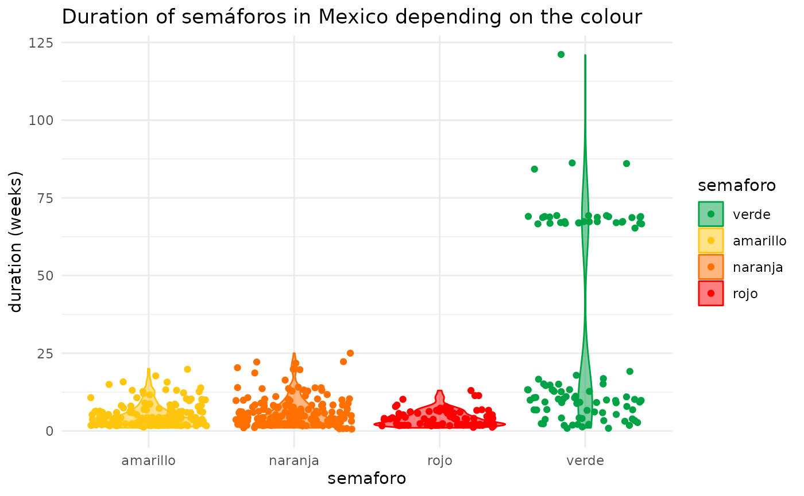
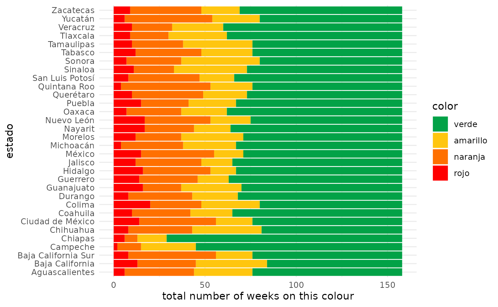

Get Semáforo Epidemiológico Data from Mexico COVID-19 Response
Source:vignettes/semaforos.Rmd
semaforos.Rmd
sl <- semaforos_get("long")
head(sl)
#> estado year week color
#> 1 Aguascalientes 2020 22 rojo
#> 2 Baja California 2020 22 rojo
#> 3 Baja California Sur 2020 22 rojo
#> 4 Campeche 2020 22 rojo
#> 5 Chiapas 2020 22 rojo
#> 6 Chihuahua 2020 22 rojoMap of semaforos over time
library(ggplot2)
library(sf)
mxstates <- readRDS(system.file("extdata", "sf_mx_estados.rds", package = "semaforos"))
df <- merge(mxstates, sl, by.x = "name", by.y = "estado", all = TRUE)
df$yearweek <- paste(df$year, df$week, sep = "-")
for (w in sort(unique(df$yearweek))) {
print(
ggplot(df[df$yearweek == w, ]) +
geom_sf(aes(fill = color), size = 0.2) +
coord_sf() +
scale_fill_manual(values = c("verde" = "#02A247", "amarillo" = "#FFC60F", "naranja" = "#FF7000", "rojo" = "#FF0000"),
limits = c("verde", "amarillo", "naranja", "rojo")) +
theme_minimal() +
theme(title = element_text(color = "grey30"), legend.text = element_text(color = "grey30")) +
labs(title = paste("Semáforos for week", w))
)
}


Duration of each semáforo
library(dplyr)
#>
#> Attaching package: 'dplyr'
#> The following objects are masked from 'package:stats':
#>
#> filter, lag
#> The following objects are masked from 'package:base':
#>
#> intersect, setdiff, setequal, union
library(ggplot2)
duration_sf <- sl %>%
group_by(estado) %>%
summarize(semaforo = rle(color)$values,
duration = rle(color)$lengths)
#> `summarise()` has grouped output by 'estado'. You can override using the `.groups` argument.
head(duration_sf)
#> # A tibble: 6 x 3
#> # Groups: estado [1]
#> estado semaforo duration
#> <chr> <chr> <int>
#> 1 Aguascalientes rojo 2
#> 2 Aguascalientes naranja 9
#> 3 Aguascalientes rojo 2
#> 4 Aguascalientes naranja 4
#> 5 Aguascalientes amarillo 2
#> 6 Aguascalientes naranja 12
ggplot(duration_sf, aes(x = duration, fill = semaforo)) +
geom_histogram() +
scale_fill_manual(values = c("verde" = "#02A247", "amarillo" = "#FFC60F", "naranja" = "#FF7000", "rojo" = "#FF0000"),
limits = c("verde", "amarillo", "naranja", "rojo")) +
labs(x = "duration (weeks)",
title = "Distribution of the durations of semáforos in Mexico") +
theme_minimal()
#> `stat_bin()` using `bins = 30`. Pick better value with `binwidth`.
ggplot(duration_sf, aes(x = semaforo, y = duration, fill = semaforo, color = semaforo)) +
geom_violin(alpha = 0.5) +
geom_jitter() +
scale_fill_manual(values = c("verde" = "#02A247", "amarillo" = "#FFC60F", "naranja" = "#FF7000", "rojo" = "#FF0000"),
limits = c("verde", "amarillo", "naranja", "rojo")) +
scale_colour_manual(values = c("verde" = "#02A247", "amarillo" = "#FFC60F", "naranja" = "#FF7000", "rojo" = "#FF0000"),
limits = c("verde", "amarillo", "naranja", "rojo")) +
labs(y = "duration (weeks)",
title = "Duration of semáforos in Mexico depending on the colour") +
theme_minimal()
Time spent in each colour
library(dplyr)
library(forcats)
sl %>%
count(color, estado) %>%
ggplot(aes(x = estado, y = n, fill = fct_relevel(color, "verde"))) +
geom_histogram(stat = "identity") +
scale_fill_manual(values = c("verde" = "#02A247", "amarillo" = "#FFC60F", "naranja" = "#FF7000", "rojo" = "#FF0000"),
limits = c("verde", "amarillo", "naranja", "rojo"),
name = "color") +
theme_minimal() +
theme(axis.text.x = element_text(angle = 90, vjust = 0.5, hjust = 1)) +
labs(y = "total number of weeks on this colour")
#> Warning: Ignoring unknown parameters: binwidth, bins, pad